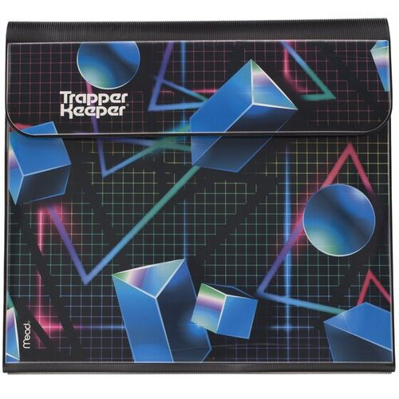

Colour system / 16 values / derived 2026
A Solarized-structured palette, measured off the Trapper Keeper Binder, Shapes cover.
binder-wave is eight monotones and eight accent hues, each accent carrying a light-mode and dark-mode variant tuned to hit WCAG AA against its own background. Everything below is the actual shipped palette.css, not a mockup.

Source. Mead "Trapper Keeper / Shapes," Accobrands 456764. We sampled every pixel of the cover in CIELAB space and clustered by hue. The photo is almost entirely cool — 98.4% of its chromatic pixels sit between 147° and 357° (blue through violet through magenta), with only a thin 0.2% sliver near 100–130° and scattered fractions elsewhere.
Blue (ΔE76 1.2 from the nearest real pixel) is a near-exact lift from the photo. Green and cyan (ΔE76 8.1 and 8.5) are close kin to real foliage-green patches. Yellow, orange, red, magenta, and violet (ΔE76 14.6–25.4) are not direct samples — the cover has almost no warm content to sample from. Those five hues complete an evenly-spaced wheel at the same lightness and chroma as the two measured hues, rather than being lifted pixel-for-pixel.
Hold lightness still within each mode, let hue do the distinguishing — then check the actual numbers. Every accent below ships as two hexes: a -faded value for light backgrounds and a -bright value for dark ones, picked automatically by light-dark().
| Accent | Hex | Ratio | WCAG |
|---|
| Accent | Hex | Ratio | WCAG |
|---|
One palette, not two. The eight accent hues and their locked chroma stay identical between light and dark — only the monotones invert (base03⇄base3, base02⇄base2, and so on) and each accent swaps to its paired lightness via light-dark(). There's no separate "light mode palette" to maintain or drift out of sync.
Field notes
designA demo post, themed live by the toggle above. Swap it and watch the monotones flip while the accent hues — this link, this tag, this byline colour — hold still. That's the whole bet: one set of hue decisions, two sets of lightness.
Sixteen values when you want them: eight monotones, eight accents. Five when you need restraint: four monotones plus one accent, which is how most of binder-wave's own plugins (tmux, kitty, lualine) actually use it.
Eight monotones
Eight accents — bright (dark-mode) and faded (light-mode)
For design work you rarely want sixteen at once. The proof isn't an abstract swatch grid — it's what binder-wave's own plugins already render, each leaning on exactly one accent for a reason specific to that surface:
lualine · vim mode color
The mode badge is the only accent on the line — blue for Normal, green for Insert, violet for Visual. Branch, file, and filetype stay on the same two monotones no matter which mode you're in.
tmux · active window
Green marks the attached session and the active window — the one thing on the bar that has to grab your eye before you read anything else on it.
kitty · focused tab
Blue marks the focused tab. Unfocused tabs sit on the same monotone as the bar itself — there's nothing competing with the one you're actually in.
The eight monotones form four mirror pairs. Each pair's two lightness values are close to complementary around the midpoint — base03/base3 sit at 14.7 and 97.2 (almost a perfect L* mirror around 56), base02/base2 at 19.9 and 92.0, and so on inward. That symmetry is what lets the same accent chroma and hue work unchanged on either side.
Plotting the eight accent hues against the photo's own hue histogram makes the honest version of the story visible at a glance: the palette's cool half (blue through green) sits right on top of where the photo actually has mass; the warm half (yellow through red) sits in territory the photo barely touches.
The whole thing is one stylesheet, scoped with :where() so it never outranks a consumer's own rules.
<link rel="stylesheet" href="https://unpkg.com/binder-wave/palette.css">
<div class="app">
<p style="color: var(--fg); background: var(--bg)">
Reads correctly in light or dark, no toggle required.
</p>
<a style="color: var(--link)">links use --blue-dim</a>
</div>